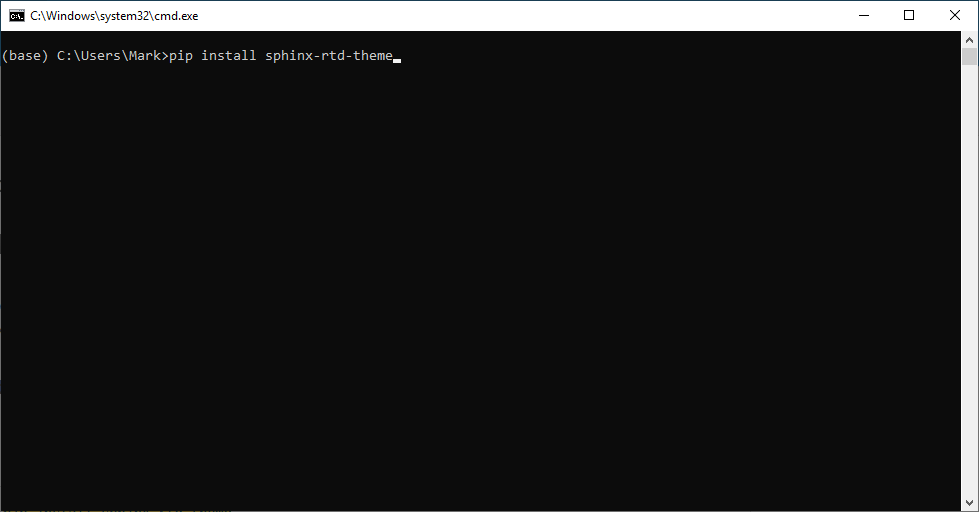
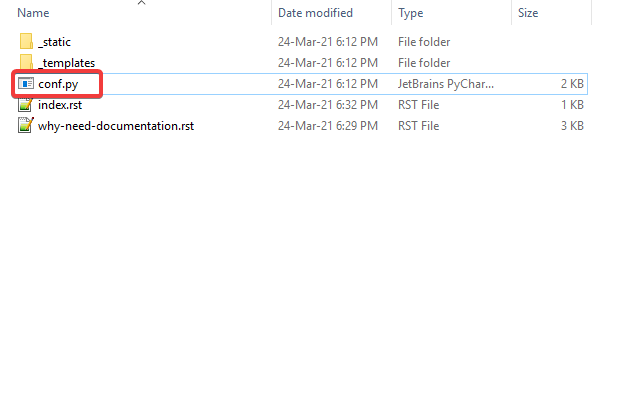
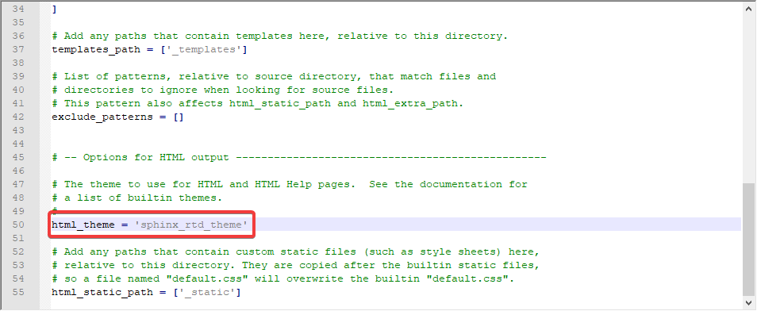
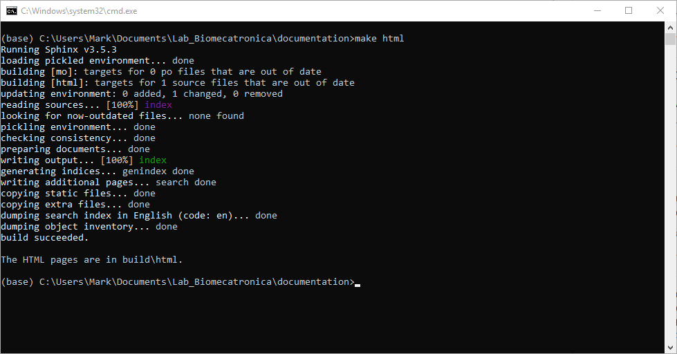
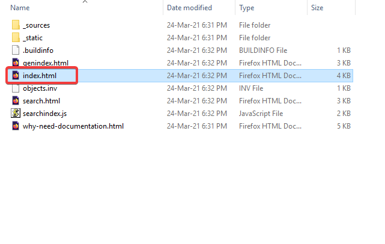
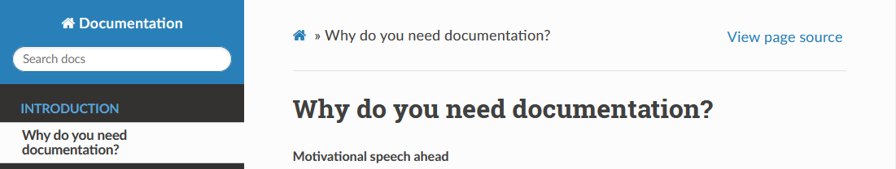

Changing Theme¶
By default Sphinx comes with a default not so pretty theme, we are going to change that.
The sphinx-rtd-theme is the standard documentation theme, is the one used in the examples as well.
Open the CMD.exe terminal using Anaconda Navigator.

The theme can be installed by visiting the theme documentation page. Alternatively you can copy and paste the next line into the terminal.
pip install sphinx-rtd-theme
To use the theme in your Sphinx project, you will need to edit the
conf.pyInside
conf.pychange tosphinx-rtd-theme, copy and paste the next line in thehtml_theme =section, replace any existing theme and save the document.html_theme = 'sphinx_rtd_theme'
Compile your project using the
make htmlcommand on the terminal. If you have no idea what am I talking about, check First Build.make html
Open the
index.htmlThe theme should now be the
sphinx-rtd-theme